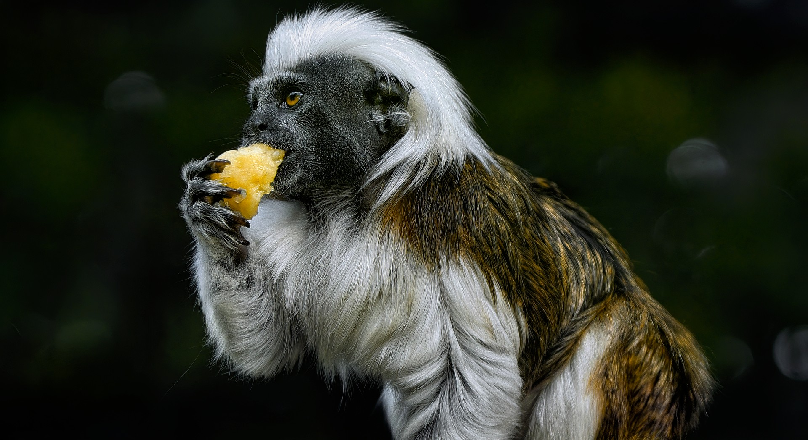
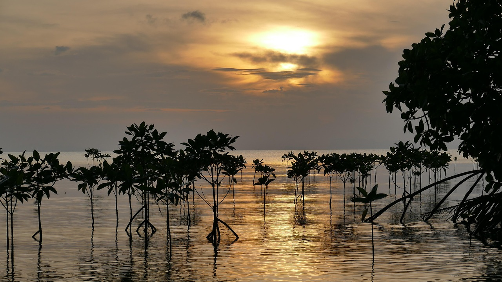
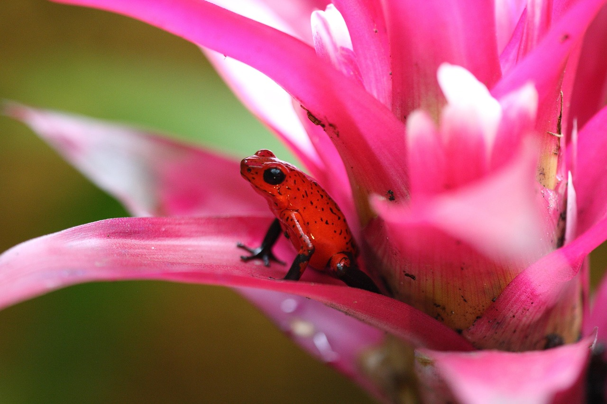
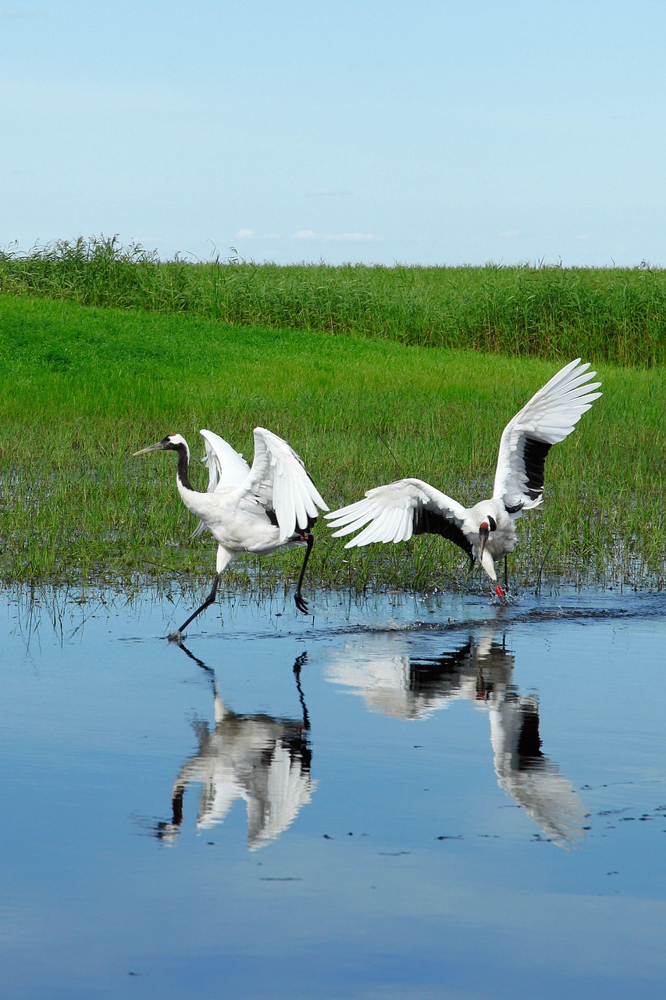
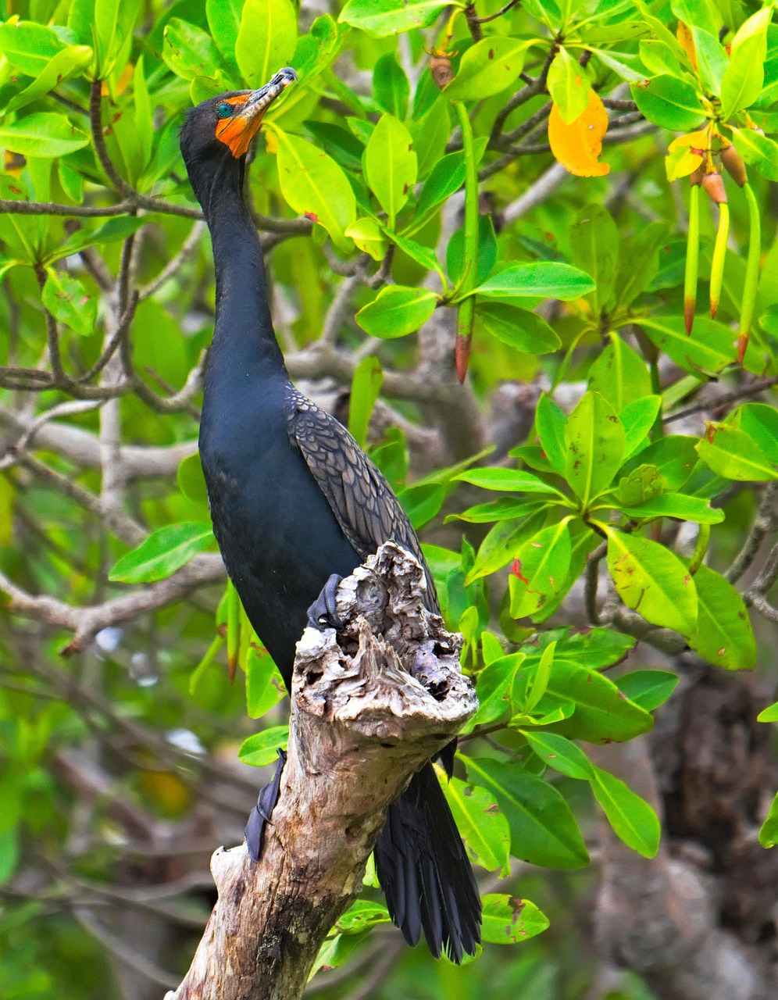

Nuestro proyecto nace en respuesta a una necesidad tangible de nuestra comunidad local: la desconexión entre los pequeños emprendedores y su mercado potencial. Observamos cómo microemprendimientos, talentos locales y productores de bienes regionales (como artesanías, electrónicos reparados o frutas frescas) enfrentaban enormes barreras para digitalizarse y competir en un mercado cada vez más globalizado. Más allá de lo económico, identificamos una amenaza al patrimonio natural: la pérdida de la flora local en peligro de extinción y la falta de conciencia sobre la fauna regional. Así, decidimos que una plataforma de comercio podía ser también un canal para la conservación y la educación. Movidos por el deseo de fortalecer el tejido económico y social del municipio, creamos esta plataforma. No es solo un "mercado en línea"; es una herramienta diseñada para democratizar el acceso al comercio digital, permitiendo que cualquier persona, sin importar su edad, ubicación o recursos, pueda iniciar y hacer crecer su proyecto desde casa, conectando directamente con su comunidad.
Nuestro objetivo principal es lanzar y consolidar una plataforma digital que en dos años conecte a más de 500 emprendimientos locales con su comunidad. Para lograrlo, nos enfocamos en: 1) Facilitar la inclusión digital priorizando a emprendedores sin experiencia o local físico; 2) Fomentar un ecosistema activo con cientos de compradores recurrentes; 3) Generar impacto tangible destinando un porcentaje de las ventas a la conservación de la flora y fauna regional; y 4) Garantizar una experiencia accesible con herramientas intuitivas que simplifiquen la publicación y comunicación entre usuarios.


Explora los proyectos que apoyamos para la preservación de nuestro patrimonio natural.





Impulsar y conectar el ecosistema de comercio local a través de una plataforma digital inclusiva y accesible, facilitando el crecimiento de microemprendimientos y negocios locales. Nos comprometemos a ser un catalizador para el desarrollo económico regional, fomentando la comunicación directa entre productores y consumidores, y a utilizar nuestro alcance para apoyar la conservación de la flora y fauna nativas, generando un impacto positivo y sostenible en nuestra comunidad.

Ser la plataforma de referencia y confianza para el comercio local y sostenible en nuestra región, reconocida por empoderar a generaciones de emprendedores, por ser un pilar para la economía circular municipal y por contribuir significativamente a la preservación del patrimonio natural local, convirtiéndonos en un modelo de negocio digital con propósito social y ambiental. Buscamos convertirnos en la plataforma de comercio electrónico preferida en Colombia, reconocida por nuestra innovación, confiabilidad y compromiso con el éxito de nuestros usuarios.

Actuamos bajo principios fundamentales que guían cada decisión y acción en nuestra plataforma, garantizando una experiencia excepcional para compradores y vendedores.

Vende o compra con confianza desde cualquier dispositivo. Simple, seguro y pensado para ti.